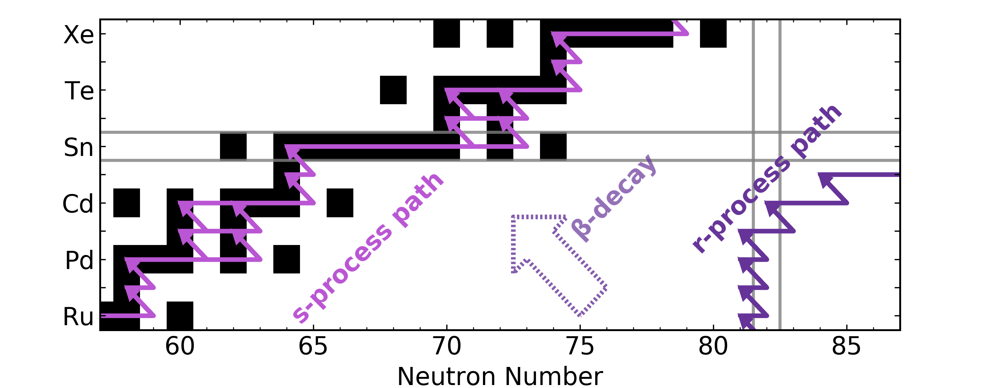
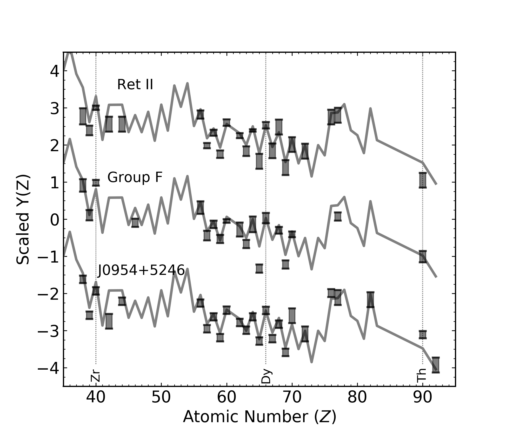
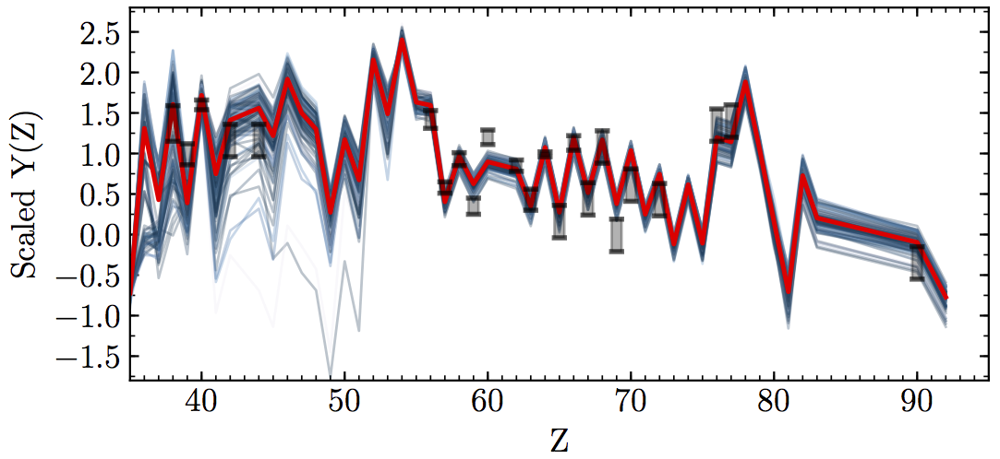
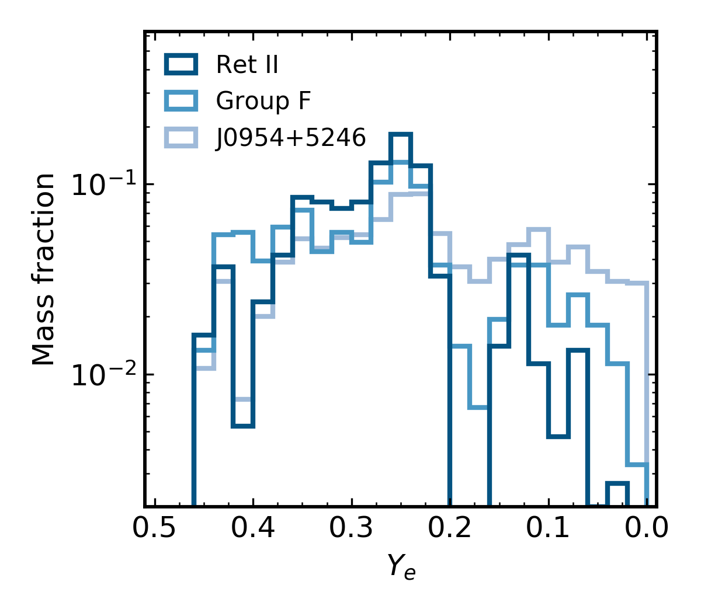

Actinide-Boost Stars may not
Suggest a Separate r-Process Site
Erika M. Holmbeck
17 April 2019
Elements in the Universe

from data in Sneden+ (2008)
Neutron capture
The r-process
r-process enhanced stars

from data in McWilliam+ (1995), Sneden+ (2003)
Site of the r-process?
Core-collapse supernovae
MHD-jet supernovae
Collapsars
Neutron-star mergers
???
Groups of r-process enhanced stars
Holmbeck+ (2019)
Are stars boosted with actinides
made by a different source
Can one event produce
the entire r-process pattern
Actinide-Dilution with Matching model
ADM abundance pattern for Ret II
Holmbeck+ (2019)
Empirically built ejecta mass distributions
Holmbeck+ (2019)
Actinide-boost stars do not call for
a separate r-process progenitor
Is this source an NSM?
GW170817: two ejecta components

GW170817: two ejecta components

Results derived from r-II stars
agree* with an NSM observation
Further evidence that an NSM occurred in Ret II?
Special Thanks
Rebecca Surman (ND), Nicole Vassh (ND), Matthew Mumpower (LANL), Trevor M. Sprouse (ND)
Gail C. McLaughlin (NC State), Anna Frebel (MIT)
Timothy C. Beers (ND), Terese T. Hansen (TAMU), Chris Sneden (UT-Austin), Vinicius M. Placco (ND),
Ian U. Roederer (UMich.), Charli M. Sakari (UW), Rana Ezzeddine (MIT)
Grant Mathews (ND), Ani Aprahamian (ND), Toshihiko Kawano (LANL)